오토 모드는 에이전트가 실행하려는 모든 명령을 사용자가 승인하게 하는 대신, 분류기가 각 동작을 평가해 위험해 보이는 것을 차단한다.
이 설계는 에이전틱 코딩에서 흔한 트레이드오프를 풀려는 시도다. 모든 명령을 검토하면 사람이 루프 안에 남지만, 세션이 몇 시간으로 늘어나거나 병렬로 여러 개 돌아가기 시작하면 그 감독이 곧 병목이 된다. 반대로 권한 검사를 아예 건너뛰면 빠르지만, 프롬프트 인젝션과 범위 이탈(scope drift), 그리고 이따금씩 삭제되는 프로덕션 리소스가 바로 그 경로로 들어온다.
Anthropic의 내부 평가에서 분류기는 개발자가 손으로 권한 프롬프트를 클릭해 넘길 때보다 더 많은 위험 동작을 잡아냈고, 서드파티 레드팀에서도 성능이 유지됐다. 또 세션이 멈추는 빈도가 줄어들면서, Claude Code 전체 사용량 기준으로 Claude는 이전 기본값 대비 중단 없이 9배 더 오래 일한다.
범용 레벨 4 자율주행 기술을 개발하는 피지컬 AI 회사 Nuro는 2025년 말 Claude Code를 도입했고, 3월에는 사내에서 가장 인기 있는 에이전틱 코딩 도구가 되었다.
오토 모드가 나오기 전, 스태프 소프트웨어 엔지니어 Kai Zhou는 이미 사내용 대체물을 프로토타이핑하고 있었다. 대기 중인 각 동작을 작은 모델로 보내 90% 정도의 일상적인 작업은 자동 승인하고, 민감한 것은 Slack으로 보내 사람이 검토하게 하는 훅이었다. 이 프로토타입은 실제 긴장 관계에 대한 답이었다. 엔지니어들은 승인 프롬프트를 지키고 앉아 있는 걸 싫어했지만, 회사의 보안·법무 관점에서는 권한을 통째로 건너뛰는 것을 승인해 주기엔 너무 위험했다. 오토 모드가 출시되자 Kai는 그 사이드 프로젝트를 접었다.
지금 Kai는 자기가 쓰는 모든 코드에 오토 모드를 쓴다.
"앉아서 계속 승인 버튼을 누르고 싶지 않다. 코딩 작업의 100%에 오토 모드를 쓴다. 대개는 오토 모드로 돌아가는 세션 세 개나 네 개를 병렬로 열어 두고, 필요할 때만 들여다본다." — Kai Zhou
예외는 다른 팀과 얽히는 작업이다. 예를 들어 Claude Code가 그를 대신해 풀 리퀘스트를 리뷰할 때는 대화형 모드로 되돌려서 나가기 전에 하나하나 검토한다.
오토 모드가 제약 없이 돌아가는 것도 아니다. Nuro는 스킬(skills)에 많이 의존하며, 엔지니어들은 재귀적 삭제처럼 가장 위험한 명령은 설정에서 아예 deny로 막아 둔다. 분류기의 판단은 그 가드레일 안에서 이뤄진다.
다만 더 큰 해금은 엔지니어가 퇴근한 뒤에도 계속 돌아가는 작업을 걸어둘 수 있게 된 것이다. 구체적으로 Kai의 팀은 자율주행 스택 뒤의 평가 지표를 스스로 끌어올리는 장시간 리서치 에이전트에 오토 모드를 쓴다. 에이전트가 혼자 반복해 개선할 수 있는, 명확하고 측정 가능한 신호가 있는 작업들이다.
밤새 에이전트는 평가 스위트가 플래그한 거짓 음성(false negative)을 분석하고, 제안서를 작성하고, 실험을 돌리고, 결과를 놓고 계속 반복할 수 있다. 이 접근은 명확한 평가 방법이 있는 모든 작업으로 확장된다 — Nuro의 다른 팀은 특정 바이너리의 메모리 사용량을 줄이는 데 쓴다 — 지표 자체가 에이전트에게 개선 중인지 퇴보 중인지 알려 주기 때문이다.
"며칠 전에 밤 10시에 에이전트를 걸어 뒀는데 새벽 5시까지 계속 돌았다. 그리고 아침에 PR 세 개를 줬다. 꽤 인상적이라고 생각한다. 이런 워크로드는 오토 모드만 가능하게 해 준다." — Kai Zhou
중소기업 대상 기술 기업 Gusto에서 오토 모드로의 전환은 선제적인 보안 업그레이드로 시작됐다.
회사의 AI Dev Tools 팀에서 일하는 Martin Emde는 권한 피로가 팀 속도를 떨어뜨리는 것을 지켜봤다. 오토 모드는 통제나 보안을 희생하지 않으면서 같은 속도를 줬고, 엔지니어링 전반에 도입이 자리 잡은 뒤 전체 권한 부담이 눈에 띄게 줄었다.
Martin은 12월 이후 Claude Code 세션 2,425개를 시작했고, 오토 모드가 그의 상시 설정이다. 예전에는 폴더 접근 승인에서 멈춰 서던 리포지터리 간 작업이 이제 중단 없이 돌아가고, GitHub·Slack·Jira에서 일일 노트를 모으는 것 같은 무인 작업도 알아서 굴러간다. 팀 자체 분석에 따르면 2026년 5월 중순 이후 세션 트랜스크립트의 약 10%에 오토 모드 거부가 포함됐는데, 정당한 작업을 방해하지 않으면서 분류기가 실제로 일하고 있다는 증거다.
"오토 모드는 속도와 통제 사이에 더 안전한 균형을 줬다. 반복되는 프롬프트를 없애면서 안전을 타협하지 않고 생산성을 높일 수 있었다. 오토 모드가 적절한 타이밍에 차단하는 것이 보이고, 그게 빠르게 움직일 자신감을 준다." — Martin Emde
Gusto의 AIT 클라우드 엔지니어링 팀 소속 Chad Kunsman은 반대 방향에서 같은 결론에 도달했다. 엔드포인트 조사, 로그 감사, 커넥터 관리, 여러 MCP 서버에 걸친 문서 인제스트 같은 그의 작업은 밤샘 마라톤이 아니라 20분 단위의 짧은 버스트로 돌아간다. 그는 더 긴 실행을 원한 게 아니라, 잘못된 프롬프트나 프롬프트 인젝션이 빠져나갈 노출 없이 바이패스 권한 모드의 손 안 대는 속도를 원했다.
"프롬프트 인젝션에 대한 보호, 그리고 지금 하고 있는 일이 실제로 요청한 것과 맞는지 확인해 주는 방식까지 감안하면, 바이패스 권한보다 더 나은 선택이고 권한 프롬프트보다 훨씬 빠르다." — Chad Kunsman
분류기가 개입하는 드문 경우에도 판단이 정확하다고 그는 말한다.
"막았을 때 그게 납득이 됐고 이유도 설명해 줬다. 내가 원래 요청한 것에서 벗어나고 있었고, 그래서 확인을 받은 것이다. 전혀 엉뚱하지 않았다."
Chad도 가장 민감한 작업에서는 오토 모드를 벗어난다. 세션이 프로덕션 인프라를 물고 있을 때 — Terraform, AWS, 라이브 API에 대한 직접 POST 호출 — 에는 accept edits로 바꾸고 도구 호출을 하나씩 손으로 검증한다.
"절약하는 시간과, 그것이 합리적으로 실수할 수 있는 지점, 그리고 그 실수가 얼마나 치명적인지를 저울질해야 한다. 결국 무슨 일이 벌어지든 책임은 여전히 당신에게 있다."
이런 판단은 더 넓은 다층 방어(defense-in-depth) 설정 안에서 작동한다. Gusto는 MCP 트래픽을 도구 가드와 프롬프트 검사를 갖춘 관리형 프록시 계층으로 라우팅해, 오토 모드가 판단하기 전부터 에이전트가 촘촘하게 범위가 제한된 권한으로 일하게 한다.
헬스케어 기술 기업 Garner Health는 2월에 전 부문 550명 직원 모두에게 Claude Code를 배포했다. 이 도구는 Salesforce, Zendesk, Snowflake를 포함한 모든 핵심 시스템에 연결되어 있고, 직원들은 자기 업무에서 가장 반복적인 부분을 자동화하는 데 주당 두 시간 정도를 쓰도록 권장받는다.
오토 모드 전에는 그 규모에 따르는 오버헤드가 있었다. Garner의 플랫폼 엔지니어링 매니저 Evan Magnussen은 권한 관리를 승인 명령 목록을 손으로 큐레이팅하고 파이프로 연결된 명령이 거부되는 걸 지켜보는 지루한 사이클이라고 설명한다.
지금 Evan과 대부분의 동료들은 코드베이스 조사부터 MCP를 통한 외부 통합 관리까지 모든 세션에서 오토 모드를 쓴다.
"오토 모드 덕분에만 가능한, 엔지니어링 조직 전체를 위한 표준화된 소프트웨어 개발 수명주기를 구축했다. 직원들은 이걸 어깨에서 짐을 내려놓는 것으로 받아들인다. 이제 몇 시간씩 에이전트를 감시할 필요가 없다." — Evan Magnussen
그 수명주기는 표준화된 스킬 플러그인으로 돌아간다. 에이전트가 작업을 집어 들고, 접근 가능한 컨텍스트를 탐색하고, 컨텍스트 파일을 리포지터리에 커밋하고, Evan이 "적대적 리서치(antagonistic research)"라고 부르는 과정으로 자기 가정을 압박 테스트하고, 그다음 구현으로 넘어간다. 스스로 찾을 수 없는 컨텍스트가 필요할 때만 사람을 위해 멈춘다. 리서치 비중이 큰 이 단계들은 오토 모드 전에는 불가능했다고 Evan은 지적한다.
분류기는 기본 상태로도 손볼 것이 거의 없었다. Evan이 한 가지 조정한 것은 Nuro의 Kai와 같은 방향이었다. Slack 메시지나 이메일 발송처럼 다른 사람과 소통하는 동작은 오토 모드가 승인하지 않도록 설정했다.
"다른 사람과 소통할 때 Claude가 그냥 내 대신 행동하는 걸 개인적으로 좋아하지 않는다."
핵심 지적재산을 다루는 팀들 — 오토 모드 전에는 권한 건너뛰기에 가장 회의적이었던 — 은 분류기에 주입되는 프롬프트를 자기 작업에 맞춰 더 허용적으로 또는 더 엄격하게 조정하는 법을 익혔다.
다른 기업에 대한 그의 조언은? 적극적으로 받아들이고, 안전한 배포를 보장하면서 엔지니어에게 권한을 줄 수 있도록 올바른 통제 장치를 만들라는 것이다.
"모두 각자 워크플로를 만들어라, 그런데 텔레메트리는 없다 — 이렇게 하면 매우 위험할 것이다. 텔레메트리가 있고, 상대적으로 표준적인 워크플로를 구축했기 때문에 우리는 훨씬 더 확신할 수 있다." — Evan Magnussen